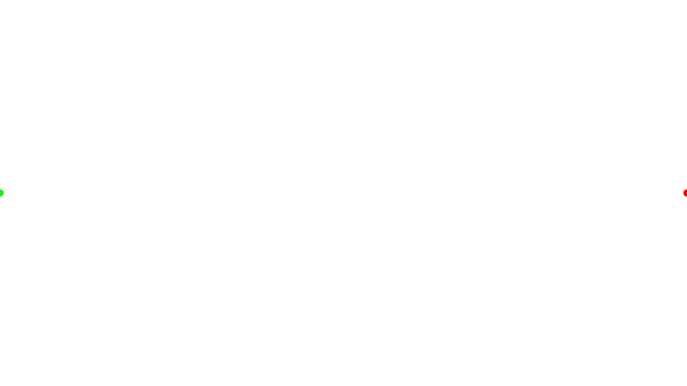

Generative Movement 20260814
One aggregated entry for the 2026-08-14 izzi generative movement family: the asama-01-roji camera track example and the Blade Runner cut-5 extracted camera movement. Open the index to reach each individual review page.
Izzi generation commit: d62562635e494236da8f1a3fe44276319d5c0f5a · 2 passes
-

Movement — asama-01-roji camera track
Camera track along a roulette trochoid re-creating the asama-01-roji alley pan (194.733 s) with ripple/raindrop/wave layers.
-
Movement — Blade Runner cut-5 camera
Extracted camera movement from the Blade Runner cut-5 clip (16.023 s) via extract-movement.py.